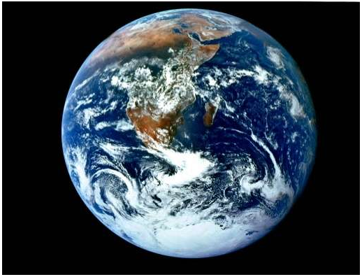
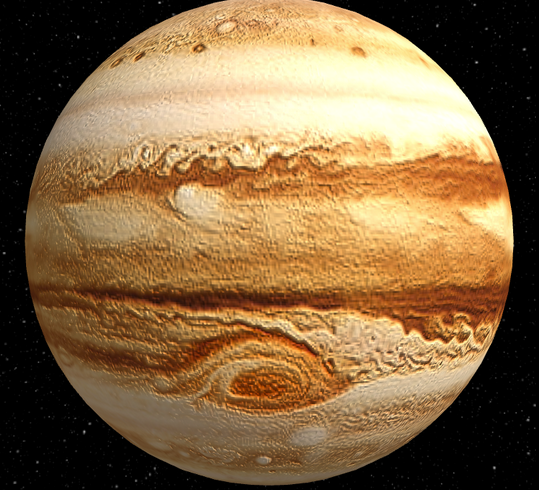
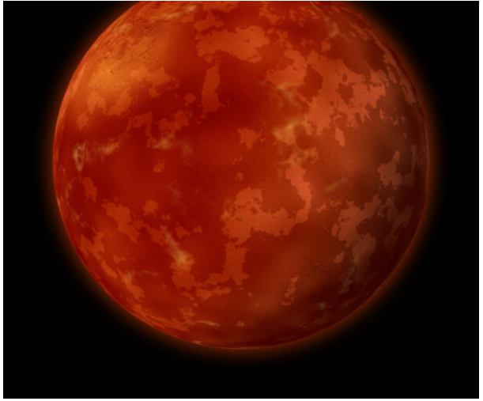
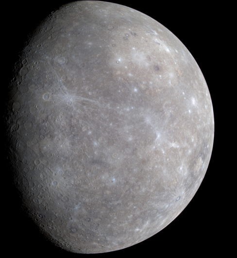

| i | i | Mass | Diameter | Mean density | Escape velocity | Average distance from Sun | Rotation period | Revolution period |
|---|---|---|---|---|---|---|---|---|
| Earth |  | 5.98 x1024 | 12756 | 5520 | 11200 | 1 AU (149,597,890 km) | 1 (23.93 hours) | 365.26 |
| Mass | Diameter | Mean density | Escape velocity | Average distance from Sun | Rotation period | Revolution period | ||
| Jupiter |  | 1.90 x 1027 | (km) 142,800 | (kg/m3) 1314 | (m/s) 59500 | 5.203 AU (778,412,020 km) | (length of day in Earth days) 0.41 (9.8 Earth hours) | (length of year in Earth years) 11.86 |
| Mass | Diameter | Mean density | Escape velocity | Average distance from Sun | Rotation period | Revolution period | ||
| Mars |  | (kg) 6.42 x 1023 | (km) 6787 | (kg/m3) 3940 | (m/s) 5000 | 1.524 AU (227,936,640 km) | (length of day in Earth days) 1.026 | (length of year in Earth days) 686.98 |
| Mass | Diameter | Mean density | Escape velocity | Average distance from Sun | Rotation period | Revolution period | ||
| Mercury |  | (kg) 3.3 x 1023 | (km) 4879.4 | (kg/m3) 5420 | (m/s) 4300 | 0.387 AU (57,909,175 km) | (length of day in Earth days) 58.65 | (length of year in Earth days) 87.97 |